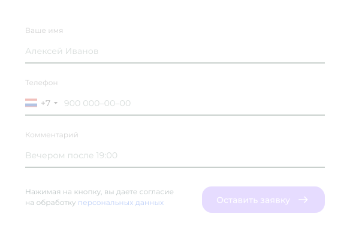

Точно знаете, какие цветы продаются лучше. Учёт сопутствующих товаров, упаковки, и даже кофе. Экономьте, сокращая процент списаний.

Кому подойдет Посифлора
Любой формат цветочного бизнеса
Возможности
Мы позаботились, чтобы все было невероятно просто и удобно,
чтобы вы и ваши флористы справились

Прием товаров
Принимать товары и моментально назначать цены в Посифлоре можно удалённо с домашнего компьютера или телефона. Флористы не смогут продать цветы дешевле.

Продажи в торговом зале
Ваши флористы могут сосредоточиться на сборке букетов и общении с клиентами.
Посифлора автоматически считает цену букета и сверяет остатки.

Онлайн-витрина
Витрина, сайт и соцсети вашего магазина — одно целое.
Вы один раз настраиваете и больше не возвращаетесь к этому вопросу.

Удалённый контроль
В своём телефоне видите, что происходит в магазине:
выручка,
чеки и предзаказы,
остатки по позициям и списания.
Это помогает принимать правильные решения.

Стабильная работа программы и сохранность ваших данных

Посифлора делает резервную копию всех данных.
Даже если произойдёт сбой, мы сможем их восстановить.

Если отключат интернет, программа продолжит работать автономно.

Мы готовы к 20-кратному росту нагрузки в праздничные и предпраздничные дни Работаем в одном из самых надёжных дата-центров.
Контроль ключевых показателей
Поручите рутинную работу Посифлоре

Учёт товаров
Учёт товаров
Точно знаете, какие цветы продаются лучше. Учёт сопутствующих товаров, упаковки, и даже кофе. Экономьте, сокращая процент списаний.
Учёт товаров
Точно знаете, какие цветы продаются лучше. Учёт сопутствующих товаров, упаковки, и даже кофе. Экономьте, сокращая процент списаний.
Функции для увеличения продаж
Повышайте выручку на системном уровне
Услуга «Цветочный консьерж»
При первом заказе Посифлора сохраняет дополнительные сведения о клиенте: его предпочтения, памятные даты. Эти данные вы можете использовать для точечной рассылки клиентам в их памятные даты или при поступлении новых партий.

Онлайн-витрина
Витрина, сайт и соцсети вашего магазина — одно целое. В Посифлоре вы можете мгновенно создать онлайн-магазин букетов. Как только флорист создаёт новый букет в Посифлоре, он тут же отображается на витрине онлайн-магазина, а клиент без труда может оплатить картой.

Ссылка для быстрой продажи
В Посифлоре флористы могут создать ссылку для быстрой продажи букета: её можно разместить в профиле соцсетей, таплинке или отправить клиенту в личных сообщениях. Клиент заполняет информацию, а флористы тут же видят заявку и начинают собирать букет.
Ссылка для быстрой продажи
В Посифлоре флористы могут создать ссылку для быстрой продажи букета: её можно разместить в профиле соцсетей, таплинке или отправить клиенту в личных сообщениях. Клиент заполняет информацию, а флористы тут же видят заявку и начинают собирать букет.
Ссылка для быстрой продажи
В Посифлоре флористы могут создать ссылку для быстрой продажи букета: её можно разместить в профиле соцсетей, таплинке или отправить клиенту в личных сообщениях. Клиент заполняет информацию, а флористы тут же видят заявку и начинают собирать букет.
Первоклассная поддержка
Ваш надежный проводник на всех этапах работы
Клиент в центре
нашего внимания
Персональное внедрение
Помощь
в подборе оборудования
Личный
бизнес-консультант
Обучение
вашей команды
Заботливая поддержка
24 / 7
24 / 7
Какие задачи вы хотите решить
с помощью Посифлоры?
Выберите несколько вариантов
Учёт товаров и услуг
Финансовый учёт
Автоматизация доставки
Продажа онлайн
Обработка заказов
Рекламные рассылки
Уменьшение списания
Увеличение прибыли
Клиентская база
Каждую неделю новые статьи о цветочном бизнесе
Познакомьтесь с опытом коллег по внедрению POSiFLORA
Почему мы?
Пару слов об успехах
32
страны
20 млрд+
оборот клиентов
в рублях
за 2022 год
1 млн+
заказов
обрабатывается
в месяц
3,5 тыс
цветочных магазина
доверили нам
свой бизнес
Ответы на частые вопросы
Развейте ваши сомнения
Что, если произойдёт сбой и вы потеряете все мои данные?
Информация хранится на центральном оборудовании и передаётся на планшет в магазин в зашифрованном
виде. Когда собственник вводит свои логин и пароль в программу, эти данные расшифровываются
и показываются ему в нормальном виде. Если злоумышленник украдёт эти данные, они будут примерно
в таком виде — «8b373710bcf876edd91f281e50ed58ab».
В любом случае рекомендуем себя обезопасить. Злоумышленник может сначала украсть ваши логин
и пароль, а потом зайти под ними и украсть или уничтожить все данные. Если ноутбук или планшет
не от Эпл, обязательно установите на него антивирус и обновляйте его.
Не рекомендуем записывать логин и пароль на листочке и оставлять их на открытых и легкодоступных
местах: в ящике стола, под чехлом планшета, на мониторе и так далее.
Что, если произойдёт сбой и вы потеряете все мои данные?
Информация хранится на центральном оборудовании и передаётся на планшет в магазин в зашифрованном
виде. Когда собственник вводит свои логин и пароль в программу, эти данные расшифровываются
и показываются ему в нормальном виде. Если злоумышленник украдёт эти данные, они будут примерно
в таком виде — «8b373710bcf876edd91f281e50ed58ab».
В любом случае рекомендуем себя обезопасить. Злоумышленник может сначала украсть ваши логин
и пароль, а потом зайти под ними и украсть или уничтожить все данные. Если ноутбук или планшет
не от Эпл, обязательно установите на него антивирус и обновляйте его.
Не рекомендуем записывать логин и пароль на листочке и оставлять их на открытых и легкодоступных
местах: в ящике стола, под чехлом планшета, на мониторе и так далее.
Что, если произойдёт сбой и вы потеряете все мои данные?
Информация хранится на центральном оборудовании и передаётся на планшет в магазин в зашифрованном
виде. Когда собственник вводит свои логин и пароль в программу, эти данные расшифровываются
и показываются ему в нормальном виде. Если злоумышленник украдёт эти данные, они будут примерно
в таком виде — «8b373710bcf876edd91f281e50ed58ab».
В любом случае рекомендуем себя обезопасить. Злоумышленник может сначала украсть ваши логин
и пароль, а потом зайти под ними и украсть или уничтожить все данные. Если ноутбук или планшет
не от Эпл, обязательно установите на него антивирус и обновляйте его.
Не рекомендуем записывать логин и пароль на листочке и оставлять их на открытых и легкодоступных
местах: в ящике стола, под чехлом планшета, на мониторе и так далее.
Что, если произойдёт сбой и вы потеряете все мои данные?
Информация хранится на центральном оборудовании и передаётся на планшет в магазин в зашифрованном
виде. Когда собственник вводит свои логин и пароль в программу, эти данные расшифровываются
и показываются ему в нормальном виде. Если злоумышленник украдёт эти данные, они будут примерно
в таком виде — «8b373710bcf876edd91f281e50ed58ab».
В любом случае рекомендуем себя обезопасить. Злоумышленник может сначала украсть ваши логин
и пароль, а потом зайти под ними и украсть или уничтожить все данные. Если ноутбук или планшет
не от Эпл, обязательно установите на него антивирус и обновляйте его.
Не рекомендуем записывать логин и пароль на листочке и оставлять их на открытых и легкодоступных
местах: в ящике стола, под чехлом планшета, на мониторе и так далее.
Что, если произойдёт сбой и вы потеряете все мои данные?
Информация хранится на центральном оборудовании и передаётся на планшет в магазин в зашифрованном
виде. Когда собственник вводит свои логин и пароль в программу, эти данные расшифровываются
и показываются ему в нормальном виде. Если злоумышленник украдёт эти данные, они будут примерно
в таком виде — «8b373710bcf876edd91f281e50ed58ab».
В любом случае рекомендуем себя обезопасить. Злоумышленник может сначала украсть ваши логин
и пароль, а потом зайти под ними и украсть или уничтожить все данные. Если ноутбук или планшет
не от Эпл, обязательно установите на него антивирус и обновляйте его.
Не рекомендуем записывать логин и пароль на листочке и оставлять их на открытых и легкодоступных
местах: в ящике стола, под чехлом планшета, на мониторе и так далее.
Посмотрите систему изнутри
Оцените сами, насколько удобно
вам будет работать с Посифлорой
